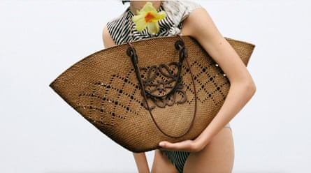
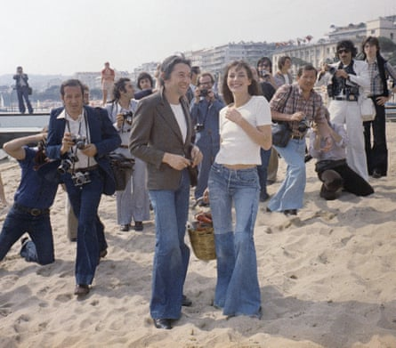

“W hen you start recognising that you’re having fun, life can be delightful,” said Jane Birkin . She was talking about champagne – but could equally have been talking about her popular basket, which is now arguably the accessory of the summer.
“It’s such a weird story, because as a useful bag it doesn’t really function,” says fashion historian Tony Glenville. The then CEO of Hermès, Jean-Louis Dumas, apparently watched as the contents of one of Birkin’s baskets spilled out on an Air France flight to London in 1984. The bag’s obvious design flaws – no zips or pockets – inspired Dumas to create the leather Birkin handbag .
Design flaws aside, the high street is awash with baskets: Next, New Look, Mango and M&S are all offering cut-price versions. Luxury fashion has hopped on the wicker wagon, too, the most sought-after version said to be by the Spanish luxury brand Loewe. In the last three months alone, searches for Loewe’s raffia bags have increased by 1600% on Net-a-Porter.
Loewe’s raffia bags are said to be the most sought-after luxury-brand baskets.Photograph: Loewe
“It’s like a trend that’s never gone out of fashion,” says Sarah Corbett-Winder, a fashion stylist who owns “embarrassingly, at least 40” basket bags. “It’s got the route to Jane Birkin, and I think that just makes it sort of ‘forever’ … She’s just so iconic.”
For Glenville, it’s about what these bags signal. “They say: ‘I’m a bit creative, I also like a picnic, and I’ve just grabbed this delicious straw bag from the hall table in my country house, or chateau.’” As such, he says, “they should ideally hold a sketching kit, some dog biscuits and a jar of homemade preserve”.
Corbett-Winder also thinks that “probably subconsciously there is a connection to that sort of era and that time; it was just very carefree”, as well as “that French girliness that we all love massively”.
Jane Birkin and Serge Gainsbourg – and that basket, again – on the beach at Cannes during the film festival in 1974. Basketmaking has since declined in the south of France, however.Photograph: Jean Jacques Levy/AP
While the leather Birkin is one of the world’s most expensive bags, the basket can be one of the most affordable.
It also helps that there are many different styles. The market shopper – roomy, and usually with leather straps – is the most commonly spotted, and probably the most practical. Birkin herself largely went for a rigid, almost egg-shaped fisher’s wicker basket.
Although the bags are associated with the south of France , there are very few basketmakers there nowadays. According to a representative of the Terre d’Argence tourist agency, “it is not a very lucrative job”. In the commune of Vallabrègues, where there is a basketry museum, “in the beginning of the 20th century, one could count up to 400 basketmakers in the village. Nowadays there is only one remaining,” they said.
We can expect to see baskets continue to flourish, as they are the epitome of summer. But will we ever see them out of the house in the colder months? Glenville thinks not. “One would never use them after September or before Easter,” he says.
But Corbett-Winder has tried. “They do still, I feel, work – but not as well,” she says.